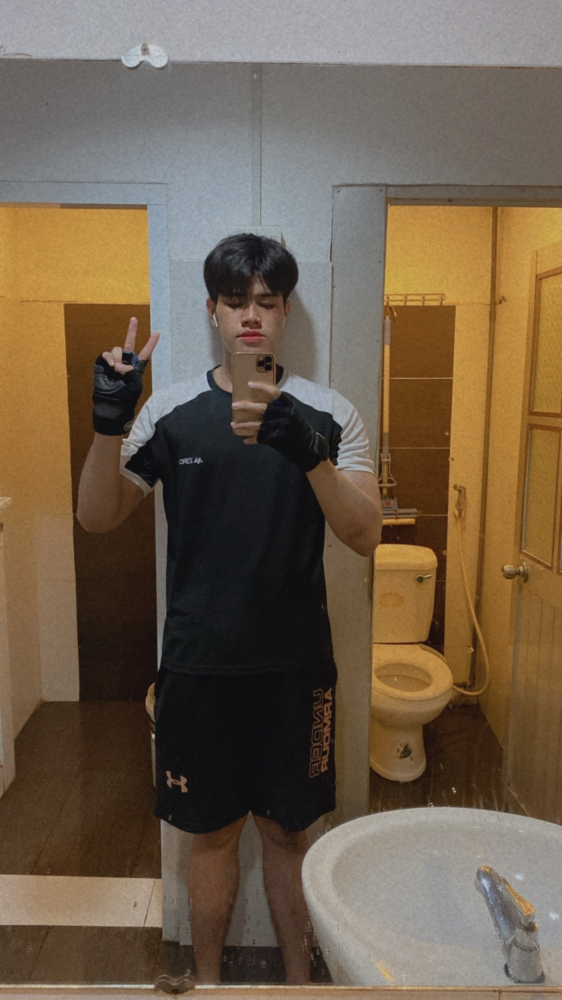
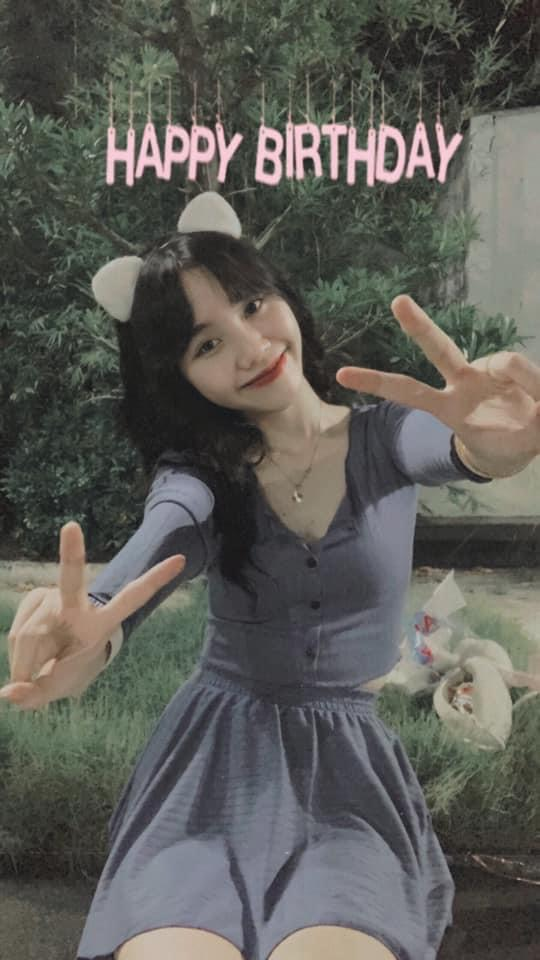
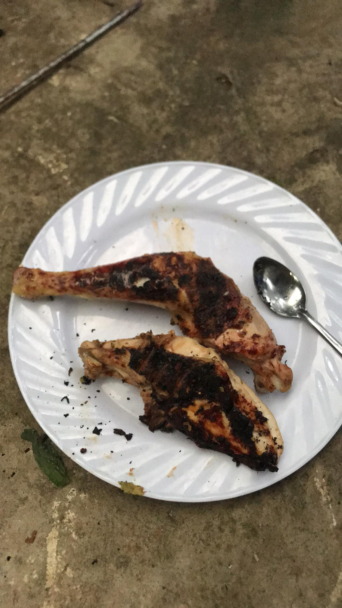

Vậy là cô công chúa thiểu năng năm nay tròn 18 tuổi rồi đó, từ nay mọi thứ trong cuộc sống này công chúa bé nhỏ phải tự quyết định rồi, chúc mừng em nha ♥
Đây là món quà mà anh nghĩ sẽ là món quà ý nghĩa nhất mà anh dành tặng cho em
Món quà này là cuốn nhật ký lưu lại khoảng những khoảng thời gian và kỷ niệm của hai tụi mình nèee
Phải thiểu năng 7 lần trước khi xem nhaaaaaa
Anh hi vọng em sẽ thích món quà này, ngại quá à 🙈
- 
- 
Những khoảng thời gian đáng nhớ của 2 tụi mình nà
-

Ngày đầu tiên mà anh chủ động nhắn tin em sau khi anh như thằng ngáo ngơ gửi ảnh điểm con nào trong khi mọi người đang chúc mừng em =)) , anh vô duyên vcl =)))
Ngày 26 tháng 07 năm 2021 -

Hôm sau là cái ngày bắt đầu chuỗi nói chuyện thật lâu của tụi mình nè, nào là em muốn sau này cưới nhau anh sẽ ở rể để cả 2 chăm sóc cho ba mẹ em nè, anh thì muốn kiểu cả ba mẹ anh và em ở chung nhà với nhau luôn để chăm sóc thật dễ cho ba mẹ, rùi đang nói chuyện mà a đi đâu giặt đồ cả gần 10 tiếng, a hãm vl :(
Ngày 27 tháng 07 năm 2021 -

Đúng là siêu đầu bếp của anh, nướng con gà nhức nách luôn, bà xã còn nhớ cái đùi gà này hong dạ =))
Ngày 30 tháng 7 năm 2021 -

Tụi mình nói với nhau đủ thứ chuyện trên đời luôn, nói chuyện với em anh vui lắm, anh không hiểu sao cứ đêm về là anh kiểu cũng mới chia tay xong trầm đi nên tính anh nó thất thường chứ thật sự anh không muốn nói mấy điều mà kiểu là muốn bọn mình dừng lại, em có thấy sang sáng hôm sau anh nhắn em liền luôn :(, vì anh sợ em sẽ không nhắn với anh nữa , anh thấy mình tệ thật sự á 😞, cái ngày 4-8 là ngày anh nói tụi mình dừng lại , thằng lz Nghĩa hãm vc
Từ 31 tháng 7 đến Ngày 04 tháng 8 năm 2021 -

Kết thúc cuộc gọi đêm đó là lần thứ 4 anh lại từ chối em, anh ích kỉ thật sự , rồi cái đêm này là em quyết định không cho anh thêm một cơ hội nào nữa, mà sáng hôm sau lại lần nữa anh tìm đến em, đây là lần anh quyết tâm muốn được quan tâm em nhiều hơn bao giờ hết, và anh cực kì nghiêm túc với mối quan hệ này, mà lúc này cũng muộn mất tiêu ùi, em chỉ vì không muốn anh tổn thương thêm lần nữa nên cố gắng nhắc khéo "anh ba" để anh biết rằng mình đang vị trí nào, nhưng mà mỗi lần vậy anh chỉ nghĩ đó chỉ là giỡn thui , anh cứ hi vọng sẽ có ngày em sẽ lại cho anh thêm một cơ hội nữa
Ngày 21 tháng 08 năm 2021 -

Và gùi tui cứ bị ảo tưởng với em trong khi đó em chỉ coi tui là "Anh ba", vì lúc đó em quay lại với ai kia gùi mà giấu tui, mà cũng chỉ vì sợ tui tổn thương hui :(((
Từ 22 tháng 8 đến Ngày 25 Tháng 9 năm 2021 -

Ngày định mệnh vl luôn, chiều đó Trúc Anh cap story em với VP cho anh coi cái anh ghen vl :((, thiệt sự luôn, anh nghĩ là em chỉ coi anh như kiểu dự phòng nhưng mà hông phải, vì em biết anh trước đây cũng bị tổn thương nên không muốn làm anh tổn thương lần nữa nên cứ cố gắng hết mức để giữ khoảng cách với anh mà không để anh buồn, mà anh ích kỉ quá, tự nhiên có cái điện thoại ngày mai gửi cho chị Thư rồi mà cái đêm khó ngủ đi nghịch thì mò vào được messenger em, anh lúc đó như thằng tiểu nhân, hãm vl , thề lúc đó không phải anh nữa :((, anh làm những trò xl thật sự , anh xin lỗi em rất nhiều vì đã xúc phạm em :((
Nửa đêm Ngày 26 tháng 9 năm 2021 -

Cái là tối hôm đó buồn quá, vì anh đã dần có cái thói quen nhắn tin với em mỗi ngày rồi, nên là dù có bất cứ chuyện gì xảy ra, anh vẫn muốn nhắn tin với em, chỉ cần em trả lời là anh cũng vui lắm rồi, dù em có lạnh lùng với anh như thế nào. Cái là tối đó tụi mình nhắn tới sáng luôn nè, trải lòng hết với nhau luôn =)))), nói chung là kiểu được nói ra để cả 2 hiểu nhau hơn anh cảm thấy thoải mái lắm, vì đó giờ anh chưa từng nói chuyện với ai mà lại duyên với nhiều cái trùng hợp đến bất ngờ luôn á, có những thứ mà anh nghĩ không thể nào xảy ra mà duyên vậy được =)), nhiều lúc anh cứ nghĩ anh với em công nhận là luôn bất trách trong tình yêu nhưng mà biết đâu anh với em sinh ra dành cho nhau thì sao =)))), vì nhiều điểm chung vcl mà =)))
Thâu đêm suốt sáng Ngày 27 tháng 9 năm 2021 -

Rùi tụi mình lại nói chuyện với nhau nè, mặc dù anh nhận thấy là em cũng có tình cảm với anh nhưng mà sau những chuyện xảy ra thì em không muốn tụi mình dính đến chuyện tình yêu nữa nên luôn tìm hiểu những mối quan hệ mới hay người yêu cũ, cả anh cũng vậy, nhưng mà thật sự kiểu dù anh có quay lại với nyc nhưng mà cảm giác của anh lạ lắm ,kiểu như là tình cảm bị dồn cho em hết rồi á :((, nên giờ có quen Trang anh cũng không cảm thấy gì nữa nên anh quyết định chia tay và cũng đ muốn dính tới tình yêu luôn, không biết em cũng có cảm giác giống anh không, kiểu là quen nhưng mà cảm giác không còn thấy vui như xưa vậy á. Buồn thiệt ha :(
Từ Ngày 28 tháng 9 đến Ngày 25 tháng 11 năm 2021 -

Ngày đầu tiên được chạm mặt em và gia đình em nè, má ngại vcl =))) , biết quá nhiều về nhau cứ nghĩ là chắc sẽ không bao giờ gặp mặt nhau đâu nhưng mà trái đất tròn mà =))) , lúc đầu nhìn thấy em , thấy nhìn tướng nhỏ nhỏ nhoi nhoi đáng iuuu ghê á =))), nàng công chúa bất cần đời của anh ♥
Ngày 26 tháng 11 năm 2021 -

Sau cái ngày anh dìa được 1 ngày, cái anh nhớ em quá, mà biết kiếm cớ gì giờ, có mẹ Hương làm bình phong thui, xin lên chơi ở nhà em nhưng mà chị Thư nói là mẹ Hương vì cái vụ ba em không thích tiếp khách nữa á tại bà Thư mới đi để lại đống đổ nát mà =))) , cái là mẹ chỉ cho anh xuống chợ thui, tính là em không ra là chiều đó anh chơi xong anh về, mà ai dè em ra nè dui ghê =))), hạnh phúc trong lòng lắm luôn á, cái là có 2 đêm ngủ đáng nhớ cùng em =))), "Đêm nay Bác không ngủ" thấy em ngủ ngon quá nên anh thức canh không cho ai phá giấc ngủ của em =)))), cái anh ngắm em cả đêm á, anh nghĩ nhiều chuyện lắm cơ, k phải bậy bạ nha =))), kiểu nghĩ về chuyện chúng ta sau này không biết có được kết quả gì không á =))), rùi cái là anh muốn có một mối quan hệ nghiêm túc với em từ đó luôn..
Từ Ngày 27 tháng 11 đến Ngày 18 tháng 12 năm 2020 -

Là ngày hôm nay á em yêu, là một ngày mà từ nay sẽ trở thành một ngày kỷ niệm quan trọng trong cuốn lịch của anh - là ngày mà công chúa trong lòng anh ra đời nè, đây là sinh nhật đầu tiên mà anh được trực tiếp chúc công chúa của anh những điều tốt đẹp nhất, là đầu bếp chính cho những món ăn trong ngày trọng đại nè, là ngày mà anh được thấy công chúa của anh mỉm cười thật hạnh phúc bên gia đình và cả bên anh.
Happy Birthday bà xã ♥♥♥Ngày 19 tháng 12 năm 2021
Hết rùiiiii
Mong là chúng ta sẽ có được thật nhiều kỉ niệm với nhau trong tương lai, anh sẽ luôn trân trọng từng giây phút anh được ở bên em

{kind=link}
{kind=link}
{kind=link}
{kind=link}
{kind=link}
{kind=link}
{kind=link}
{kind=link}
{kind=link}